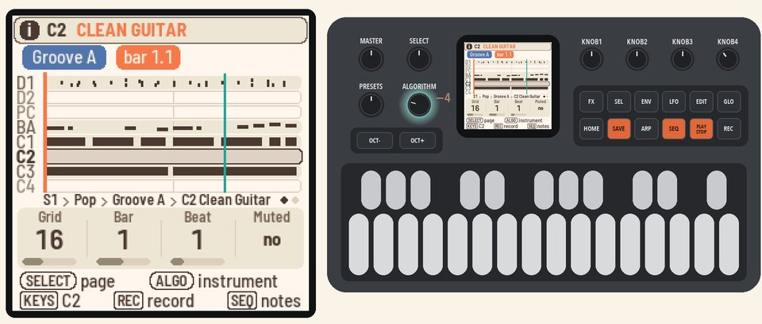
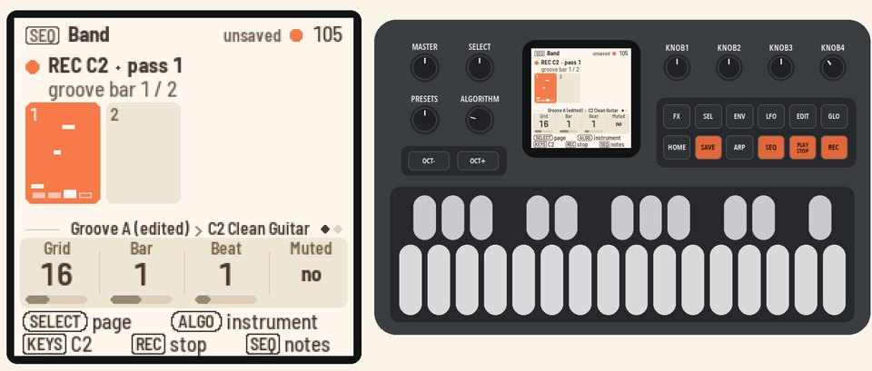
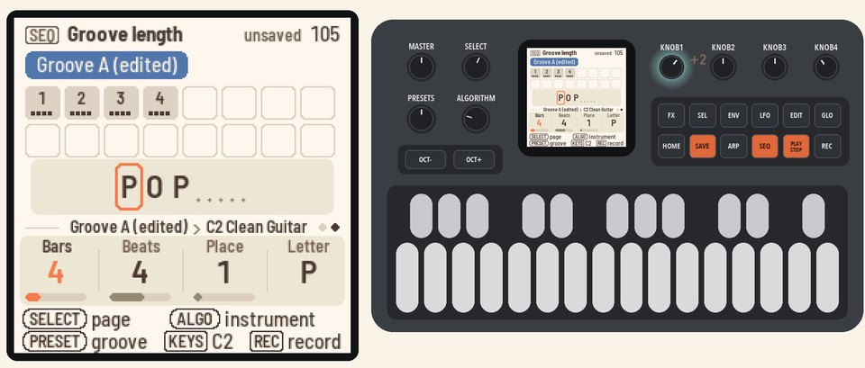
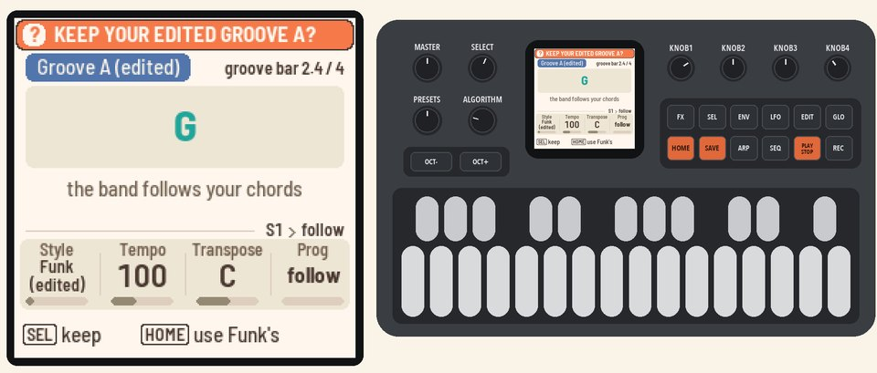
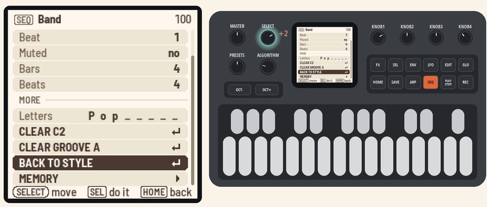

Lessons · 106 Your own grooves
106 Your own grooves
Record an instrument into the style's groove, and Polly keeps an edited copy of the groove.
Picks up where 105 left off, with Polly stopped in your song and Pop as the style.
Transcript of the video
The video shows the FM-1 from the front, with the keys and buttons lighting as they are pressed. Its captions, with the time each one appears (1:13 in all):
- 0:00 Your own grooves. Record an instrument into the style's groove, and Polly keeps an edited copy.
- 0:03 1. Pick an instrument. Press HOME for the Home page. Turn KNOB 4 (Prog) down, past P1, to "follow". The band follows your chords, not the song.
- 0:09 1. Pick an instrument. Hold HOME and press black key 2 for Groove A.
- 0:16 1. Pick an instrument. Press PLAY. Press SEQ for the Band page, and turn ALGORITHM to C2. Its row is empty.
- 0:24 2. Record. Press REC. Polly makes an edited copy and marks it Groove A (edited). Play from the next bar.
- 0:32 2. Record. The groove keeps looping, so you can keep adding notes. Press REC again to stop.
- 0:38 3. Make it longer. Turn SELECT to the Groove length page. Turn KNOB 1 (Bars) to 4.
- 0:45 4. Change the style. Press HOME and turn KNOB 1 (Style) to Funk. Polly asks if you want to keep Groove A.
- 0:51 4. Change the style. Press SEL to keep it. Your Groove A plays with Funk's band.
- 0:57 5. Give the groove back. Press PLAY to stop. Press SEQ, then SEL for the list.
- 1:02 5. Give the groove back. Turn SELECT to BACK TO STYLE and press SEL. Your copy stays in Memory.
- 1:09 Next: 107. Fixing notes.
1. Pick an instrumentPress HOME for the Home page. Turn KNOB 4 (Prog) down, past P1, to "follow". The band now follows the chords you play, not the song.Hold HOME and press black key 2 for Groove A. Press PLAY. Press SEQ for the Band page, and turn ALGORITHM to C2. In Pop, C2 plays a clean guitar. Its row is empty, because it doesn't play in this groove. Play the keys to hear it. |  |
2. RecordPress REC. Polly makes an edited copy of the groove, and the screen shows Groove A (edited). Start playing at the next bar.The groove keeps looping, so you can keep adding notes. Press REC again to stop recording. |  |
3. Make it longerTurn SELECT to the Groove length page. Turn KNOB 1 (Bars) to 4. The two new bars repeat the first two, so the band keeps going. |  |
4. Change the stylePress HOME for the Home page, and turn KNOB 1 (Style) to Funk. Polly asks "KEEP YOUR GROOVE A?"Press SEL to keep it. Your Groove A plays with Funk's band. |  |
5. Give the groove backPress PLAY to stop. Press SEQ, then SEL for the list. Turn SELECT to BACK TO STYLE and press SEL.Groove A plays Funk's groove again. Your copy stays in Memory. |  |
More in the manual
To keep your grooves when you change the style, see Picking a style. To copy a groove into a place with SAVE, see Memory. See also Recording an instrument, The Band page, Edited grooves, Groove length and The groove's actions.